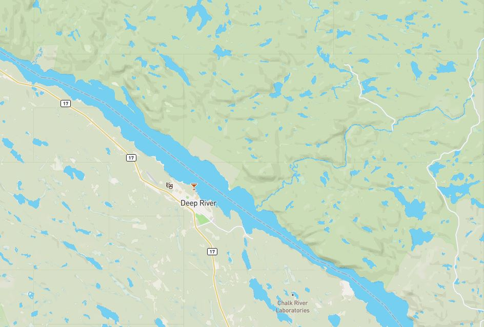
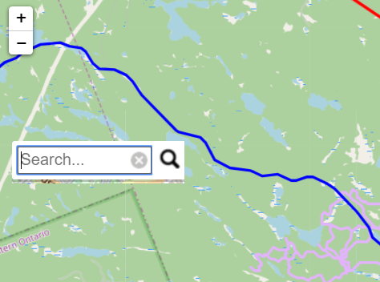

Deep River Trail
Developed by Sharad, Ramon & Kamel
The Problem
Town of Deep River requires a web application but has a very limited budget. Our team will be exploring various platforms that can build a high quality, low-cost application that will be ideal to build this product on. The application must fit our skillset, be of low budget, non-time consuming and produce a product with all the functionality required which are pop up tables, good basemaps, filtered searches and more.

Scope
Along with research, Our team will be creating a mini demo on identified platforms. In these demos we will be testing for the criteria listed above and analyzing which software achieves the solution to the problem best. Advantages and Disadvantages will be documented as well with any challenges encountered. Keep scrolling to find out how we worked towards completing this!
Our Journey
Our journey started with little knowledges on trail maps. We are required to explore all possible options to compare one better than the other and that comes with low cost or free. We were team of three dynamic people with different interest and skills: two Cartographic Specialist and one Application specialist. Every journey starts with first step, we did. We started sharing our area of strength focusing on the scope of our project. Regular meeting times were fixed, preferred method of contacts shared and took litlle baby steps.
There were a lot of challenges in the begining. Cartography specialist had only limited knowledge to demonstrate programming skills, while giving all coding task to Application specialist was not always fair. At this point we realized we have a long journey to go. We are going to demostrate step by step how we overcome all the challenges to find the perfect solution for our client.
Shortlisting the Software to explore
After research, Our team came to the conclusion, that we will be testing for the criteria listed above in four(4) software and analyzing which best achieves the solution. The four software are:
- Mapbox
- Google MyMaps
- Leaflet
- ArcGIS Online
Mapbox
Mapbox is a great platform for beautiful maps.. It is a mapping startup that offers users a platform for making custom maps based on OpenStreetMap and other open data.
While we were having some issues with implementing programming skills, we started exploring options to overcome our challenges and found mapbox studio is one good fit for us which does not require any coding. We published our trail layers to ArcGIS Online, exported them as a GeoJSON file and downloaded the GeoJSON file. Mapbox has simple solution to display layers without any coding. Mapbox has an option to add layers as Tilesets and create styles form it. A tileset is a collection of raster or vector data broken up into a uniform grid of square tiles at 22 preset zoom levels, which is necessary to make map visible on mobile devices or in the browser.
Supported format:
- Raster tilesets: tiff or Geotiff files
- Vector tilesets: GeoJSON, Shapefile, KML, or GPX files

Criteria
As we ventured into Mapbox, we firstly tried to indivually test each criteria to see how effective it is at each task to weigh them against each other. Firstly,
Pop-up Table

Mapbox provides an easy interactive on-click pop-up table that's easily configurable and portrays alot of information to users efficiently and effectively.
Cost
Mapbox is free as long as the application provides free service up to 50,000 views per month. This works well for Town of Deep River div class="content">
Time
Mapbox was very time consuming compared to the other applications. The margin of error is very high and our skillset was not up to standard to have a high quality application running in a couple weeeks.
Quality
The maps produced by mapbox are of the highest quality. The basemaps and ability to create styles are unmatched. Cartogram is also a very nice feature for creating styles of the fly.

Next, we dived into ArcGIS Online. It is a collaborative web GIS that allows you to use, create, and share maps, scenes, apps, layers, analytics, and data. For ArcGIS Online, we also started with indivually testing each criteria to see how effective it is at each task to weigh them against each other. ArcGIS Online also provides an easy interactive on-click pop-up table that's easily configurable and portrays alot of information to users efficiently and effectively. In addition it also allows the user to zoom into that feature which can be very useful for the application ArcGIS Online comes as a cost. The time was moderate for ArcGIS Online. A good application can be built really quickly and can be designed very well. We are more experienced with this item so goals can be met using this software much more effectively. The maps produced by ArcGIS are of good quality. The basemaps are of a nice quality and there are plenty options which can be added to the a map that is suitable for the web application.
The interactive map below was obtained through Leaflet. We used ArcGIS Pro to load the gathered shapefiles and then convert them to GeoJSON files. These GeoJSON files were then used as input for building our LeafLet Map. While performing the Leaflet Demo using the complete dataset available, we were able to test its suitability to be our platfom of choice. On-click pop-up Tables are quite easy to configure on Leaflet using the onEachFeature option which is an a function that gets called on each feature before adding it to each GeoJSON layer. Leaflet is a free, open source application Leaflet was very time consuming when configuring on-click popups tables, applying styling, or adding a legend for one large GeoJson file containing a large number of collection features as coding needed be repeated for all identified features which is error prone. The obtained Leaflet map allows users to zoom and pan around, to interact with individual layers in order to access all relevant.It does also offer many styling and basemap options that may be extended with appropriate plug-ins.  Google My Maps is very easy platform for developers to add points or to draw shapes. Google My Maps is the fastest platform to develop application for our projet. We consider looking at different aspect to consider it as our final solution My Maps also provides an easy interactive on-click pop-up table that's easily configurable and portrays alot of information to users efficiently and effectively. To configure and edit pop-up table was easiest among all the softwares we explored. My Maps is completely free platform, it allows developers to share on webpage wihtout any restrictions. The time for app development in google was very quick and no programming knowledge required. Maps made on My Maps are good but not that great compared to other software however basemaps are as good as other high cost platform suitable for our project.
We had one long trail with bigger file size, it failed to upload with error message. WE learned google has limtation on file size
After testing each software, the team came to a decision that ArcGIS Online was the best fit for this project. Overall, this software
proved to be the most balanced, having good interactivity, can be made relatively quickly, fits the team's skillset and although being the only software having a price, the product produced is definitely worth it. Click image below to view Our Goal was to find the application that best suits this project. With the knowledge acquired the team can now move forward and build a final product for the Town of Deep River. Findings
Mapbox
Pros
Cons
ArcGIS Online
Criteria
Pop-up Table
Cost
Time
Quality

Leaflet
Leaflet

Criteria
Pop-up Table
Cost
Time
Quality

Challenges
Pros
Cons
Google My Maps
Supported File
Criteria
Pop-up Table

Cost
Time
Quality
Interactive Demo
Here is a demo on google My Map.
Findings
Pros
Cons
Our Solution
 © Untitled. All rights reserved. Design: HTML5 UP.
© Untitled. All rights reserved. Design: HTML5 UP.